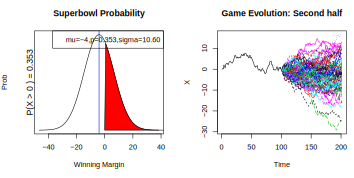
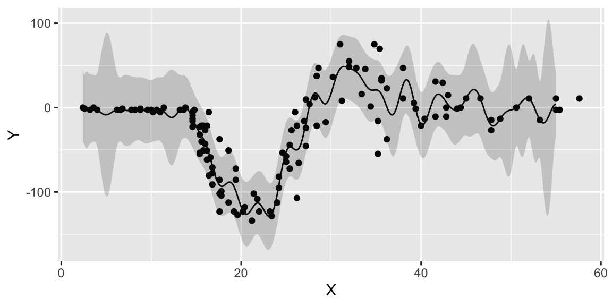
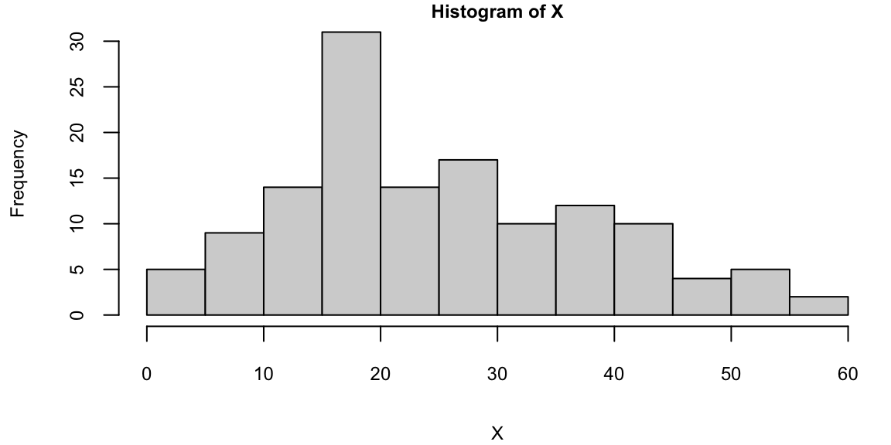

Yet another fundamental concept that is useful for probabilistic reasoning is stochastic process. An instance of a process is a function \(Y:~ U \rightarrow S\) from domain of index set \(U\) into another set of process values \(S\), called state-space. The state-space of a stochastic process is the set of all possible states that the process can be in. Each state in the state-space represents a possible outcome or condition of the system being modeled. The process then is the distribution over the space of functions from \(U\) to \(S\). The term process is used because the function \(Y\) is often thought of as a time-varying quantity, and the index set \(U\) is often interpreted as time. However, the index set can be any set, and the process can be a random function of any other variable. Both index set and state-space can be discrete or continuous. For example, discrete time index can represent days or rounds and continuous time index is a point on a time line. The state-space can be discrete (composed of distinct states, like the number of customers in a store) or continuous (such as the price of a stock). The state-space can be one-dimensional (only one aspect of the system is modeled) or multi-dimensional (multiple aspects are modeled simultaneously).
Here are some widely used stochastic processes:
Random Walk: A simple example where the next state depends on the current state and some random movement. In finance, stock prices are often modeled as a type of random walk.
Markov Chains: A process where the next state depends only on the current state and not on the path taken to reach the current state.
Poisson Process: Used to model the number of times an event occurs in a fixed interval of time or space, where events occur with a known constant mean rate and independently of the time since the last event.
Queuing Theory: Models used in operations research where the stochastic process represents the number of customers in a queue, varying over time as customers arrive and are served.
Brownian Motion: This process models the random movement of particles suspended in a fluid. It has applications in physics, finance (to model stock market prices), and biology.
Gaussian Processes: These are a collection of random variables, any finite number of which have a joint Gaussian distribution. They are used in machine learning for regression and classification tasks.
In contexts like agricultural field trials, the domain for analyzing yield is commonly referred to as the collection of plots. This term is broadly suitable for practical field purposes but is mathematically interpreted as the collection of planar Borel subsets across various growing seasons. In a basic clinical trial for a COVID-19 vaccine, like the AstraZeneca trial in 2021, the domain is typically referred to as the group of patients. This implies the inclusion of all eligible patients, regardless of whether they were actually recruited and observed in the trial. In research on speciation or sexual compatibility in fruit flies, the domain is defined as the set of male-female pairs, encompassing all potential pairs with the desired genetic traits. For a competition experiment, such as a chess or tennis tournament, the domain is described as the set of ordered pairs of participants, which includes all possible pairings, not just those who actually competed against each other at events like US Open in 2024.
In data analysis, both experimental and observational data can exhibit variability. This variability is often modeled using probability distributions. These distributions can either represent simple processes with independent elements (then we are back to i.i.d case) or more complex stochastic processes that display dependencies, whether they be serial, spatial, or of other types. Essentially, this modeling approach helps in understanding and predicting data behavior under various conditions. The early sections of Davison (2003) work offer an insightful primer on how to develop and apply these stochastic models across various fields. This introduction is particularly useful for grasping the fundamental concepts and practical applications of these models.
9.1 Brownian Motion
Brownian Motion, named after botanist Robert Brown, is a fundamental concept in the theory of stochastic processes. It describes the random motion of particles suspended in a fluid (liquid or gas), as they are bombarded by the fast-moving molecules in the fluid.
A one-dimensional Brownian Motion (also known as Wiener process) is a continuous time stochastic process \(B(t)_{t\ge 0}\) with the following properties
\(B(0) = 0\) almost surely
\(B(t)\) has stationary independent increments: \(B(t) - B(s) \sim N(0, t-s)\) for \(0 \le s < t\)
\(B(t)\) is continuous function of \(t\)
For each time \(t > 0\), the random variable \(B(t)\) is normally distributed with mean 0 and variance \(t\), i.e., \(B(t) \sim N(0, t)\).
Formally brownian motion is a stochastic process \(B(t)\) is a family of real random variables indexed by the set of nonnegative real numbers \(t\).
Figure 9.1 below shows tree sample paths of Brownian Motion.
Thus, for any times \(0 \leq t_1 < t_2 < ... < t_n\), the random variables \(B(t_2) - B(t_1)\), \(B(t_3) - B(t_2)\), …, \(B(t_n) - B(t_{n-1})\) are independent and the function \(t \mapsto B(t)\) is continuous almost surely.
Some properties of Brownian Motion are:
Scale Invariance: If \(B(t)\) is a Brownian motion, then for any \(a > 0\), the process \(aB(t/a^2)\) is also a Brownian motion.
Time Inversion: If \(B(t)\) is a Brownian motion, then \(tB(1/t)\) is also a Brownian motion for \(t > 0\).
Fractal Nature: Brownian motion paths are nowhere differentiable but continuous everywhere, reflecting a fractal-like nature.
Historically, the most widely used models for stock market returns relied on the assumption that asset returns follow a normal or a lognormal distribution. The lognormal model for the asset returns was challenged after the October 1987 crash of the American stock market. On October 19 (black Monday) the Dow Jones index had fallen 508 points, or 23 percent. It was the worst single day in history for the US markets. The reason for the crash was rather simple, it was caused by the portfolio insurance product created by one of the financial firms. The idea of this insurance was to switch from equities to the US Treasury bills, as markets go down. Although the lognormal model does a good job at describing the historical data, the jump observed on that day had a probability close to zero, according to the lognormal model. The lognormal model underestimates the probability of a large change (thin tail). The widely used then Black-Sholes model for asset pricing was relying on the lognormal model, it was incapable of correctly pricing in the possibility of such a large drop.
The normal assumption of the asset returns was first proposed in 1900 in the PhD thesis of Louis Bachelier, who was a student of Henri Poincare. Bachelier was interested in developing statistical tools for pricing options (predicting asset returns) on the Paris stock exchange. Although Bachelier’s work laid the foundation for the modern theory of stochastic processes, he was never given credit by his contemporaries, including Einstein, Lévi and Borel. In 1905 Einstein published a paper which used the same statistical model as Bachelier to describe the 1827 discovery by a botanist Robert Brown, who observed that pollen particles suspended in water followed irregular random trajectories. Thus, we call the stochastic process that describes these phenomena a Brownian motion. Einstein’s advisor at the University of Zurich was Hermann Minkowski who was a friend and a collaborator of Poincare. Thus, it is likely Einstein knew about the work of Bachelier, but he never mentioned it in his paper. This was not the first instance of when Einstein did not give proper credit. Poincare published a paper Poincaré (1898) on the relativity theory in 1898, seven years before Einstein. This paper was published in a philosophy journal and thus Poincare had avoided using any mathematical formulas except for the famous \(E=mc^2\). Poincare did discussed his results on the relativity theory with Minkowski. Minkowski asked Einstein to read Poincare’s work Arnol’d (2006). However, Einstein never referenced the work of Poincare until 1945. One of the reviewers for the 1905 paper on relativity by Einstein was Poincare and he wrote a very positive review mentioning it as a breakthrough. When Minkowski asked Poincare why he did not claim his priority on the theory, Poincare replied that our mission is to support young scientists. More about why credit is mistakenly given to Einstein for the relativity theory is discussed by Logunov Logunov (2004).
Einstein was not the only one who ignored the work of Bachelier, Paul Lévi did so as well. Paul Lévi was considered a pioneer and authority on stochastic processes during Bachelier’s time, although Bruno de Finetti introduced a dual concept of infinite divisibility in 1929, before the works of Lévi in early 1930s on this topic. Lévi never mentioned the work of the obscure and little known mathematician Bachelier. The first to give credit to Bachelier was Kolmogorov in his 1931 paper Kolmogoroff (1931) (Russian translation Kolmogorov (1938) and English translation Shiryayev (1992)). Later Leonard Jimmie Savage translated Bachelier’s work to English and showed it to Paul Samuelson. Samuelson extended the work of Bachelier by considering the log-returns rather than absolute numbers, popularized the work of Bachelier among economists and the translation of Bachelier’s thesis was finally published in English in 1964 Cootner (1967). Many economists who extended the work of Bachelier won Nobel prizes, including Eugine Fama known for work on the efficient markets hypothesis, Paul Samuelson, and Myron Scholes for the Black-Sholes model, as well as Robert Merton.
Robert Merton, who was a student of Samuelson, who proposed a major extension to the work of Bachelier, by introducing jumps to the model. The additive jump term addresses the issues, asymmetry, and heavy tails in the distribution. Merton’s Jump Stochastic volatility model has a discrete-time version for log-returns, \(y_t\), with jump times, \(J_t\), jump sizes, \(Z_t\), and spot stochastic volatility, \(V_t\), given by the dynamics \[\begin{align*}
y_{t} & \equiv \log \left( S_{t}/S_{t-1}\right) =\mu + V_t \varepsilon_{t}+J_{t}Z_{t} \\V_{t+1} & = \alpha_v + \beta_v V_t + \sigma_v \sqrt{V_t} \varepsilon_{t}^v
\end{align*}\] where \(\mathbb{P} \left ( J_t =1 \right ) = \lambda\), \(S_t\) denote a stock or asset price and log-returns \(y^t\) is the log-return. The errors \((\varepsilon_{t},\varepsilon_{t}^v)\) are possibly correlated bivariate normals. The investor must obtain optimal filters for \((V_t,J_t,Z_t)\), and learn the posterior densities of the parameters \((\mu, \alpha_v, \beta_v, \sigma_v^2 , \lambda )\). These estimates will be conditional on the information available at each time.
Although it was originally developed to model the financial markets by Louis Bachelier in 1900, the Brownian Motion has found applications in many other fields, biology (movement of biomolecules within cells), environmental science (diffusion processes, like the spread of pollutants in the air or water), and mathematics (stochastic calculus and differential equations).
Example 9.1 (Brownian Motion for Sport Scores) A Model for Sports Scores
In order to define the implied volatility of a sports game we begin with
a distributional model for the evolution of the outcome in a sports game which we develop from Stern (1994). The model specifies the distribution of the lead of team A over team B, \(X(t)\) for any \(t\) as a Brownian motion process. If \(B(t)\) denotes a standard Brownian motion with distributional property \(B(t) \sim N(0,t)\) and we incorporate drift, \(\mu\), and volatility, \(\sigma\), terms, then the evolution of the outcome \(X(t)\) that is given by: \[
X(t)=\mu t + \sigma B(t) \sim N( \mu t , \sigma^2 t).
\] This distribution of the game outcome is similar to the Black-Scholes model of the distribution of a stock price.
This specification results in several useful measures (or, this specification results in closed-form solutions for a number of measures of interest). The distribution of the final score follows a normal distribution, \(X(1)\sim N(\mu, \sigma^2)\). We can calculate the probability of team A winning, denoted \(p=\mathbb{P}(X(1)>0)\), from the spread and probability distribution. Given the normality assumption, \(X(1) \sim N(\mu, \sigma^2)\), we have \[
p = \mathbb{P}(X(1)>0) = \Phi \left ( \frac{\mu}{\sigma} \right )
\] where \(\Phi\) is the standard normal cdf. Table 1 uses \(\Phi\) to convert team A’s advantage \(\mu\) to a probability scale using the information ratio \(\mu/\sigma\).
Table 9.1: Probability of Winning \(p\) versus the Sharpe Ratio \(\mu/\sigma\)
\(\mu/\sigma\)
0
0.25
0.5
0.75
1
1.25
1.5
2
\(p=\Phi(\mu/\sigma)\)
0.5
0.60
0.69
0.77
0.84
0.89
0.93
0.977
If teams are evenly matched and \(\mu/\sigma =0\) then \(p=0.5\). Table 1 provides a list of probabilities as a function of \(\mu/\sigma\). For example, if the point spread \(\mu=-4\) and volatility is \(\sigma=10.6\), then the team has a \(\mu/\sigma = -4/10.6 = - 0.38\) volatility point disadvantage. The probability of winning is \(\Phi(-0.38) = 0.353 < 0.5\). A common scenario is that team A has an edge equal to half a volatility, so that \(\mu/\sigma =0.5\) and then \(p= 0.69\).
Of particular interest here are conditional probability assessments made as the game progresses. For example, suppose that the current lead at time \(t\) is \(l\) points and so \(X(t) = l\). The model can then be used to update your assessment of the distribution of the final score with the conditional distribution $ (X(1) | X(t)=l )$. To see this, we can re-write the distribution of \(X(1)\) given \(X(t)\) by noting that \(X(1) = X(t)+ X(1) - X(t)\). Using the formula above and substituting \(t\) for \(1\) where appropriate and noting that \(X(t) = l\) by assumption, this simplifies to \[
X(1)= l + \mu(1- t) + \sigma (B(1) - B(t)).
\] Here \(B(1) - B(t) \stackrel{D}{=} B(1-t)\) which is independent of \(X(t)\) with distribution \(N(0,1-t)\). The mean and variance of \(X(1)|X(t)=l\) decay to zero as \(t \rightarrow 1\) and the outcome becomes certain at the realised value of \(X(1)\). We leave open the possibility of a tied game and overtime to determine the outcome.
To determine this conditional distribution, we note that there are \(1-t\) time units left together with a drift \(\mu\) and as shown above in this case the uncertainty can be modeled as which is Therefore, we can write the distribution of the final outcome after \(t\) periods with a current lead of \(l\) for team A as the conditional distribution: \[
( X(1) | X(t)=l) = (X(1)-X(t)) + l \sim N( l + \mu(1 - t) , \sigma^2 (1 - t) )
\] From the conditional distribution \((X(1) | X(t)=l) \sim N(l+\mu(1-t), \sigma^2 (1-t))\), we can calculate the conditional probability of winning as the game evolves. The probability of team A winning at time \(t\) given a current lead of \(l\) point is: \[
p_t = P ( X(1) > 0 | X(t) = l) = \Phi \left ( \frac{ l + \mu ( 1 - t) }{ \sigma \sqrt{ ( 1-t) } } \right )
\]

Figure 9.2: Score Evolution on a Discretized Grid
Figure 9.2 A and B illustrate our methodology with an example. Suppose we are analyzing data for a Superbowl game between teams A and B with team A favored. Figure A presents the information available at the beginning of game from the perspective of the undergod team B. If the initial point spread–or the markets’ expectaion of the expected outcome–is \(-4\) and the volatility is \(10.6\)–assumed given for the moment (more on this below)–then the probability that the underdog team wins is \(p = \Phi ( \mu /\sigma ) = \Phi ( - 4/ 10.6) = 35.3\)%. This result relies on our assumption of a normal outcome distribution on the outcome as previously explained. Another way of saying this is \(\mathbb{P}(X(1)>0)=0.353\) for an outcome distribution \(X(1) \sim N(-4, 10.6^2)\). Figure A illustrates this with the shaded red area under the curve.
Figure 9.2 B illustrates the information and potential outcomes at half-time. Here we show the evolution of the actual score until half time as the solid black line. From half-time onwards we simulate a set of possible Monte Carlo paths to the end of the game. %Specifically, we discretise the model with time interval \(\Delta =1/200\) %and simulate possible outcomes given the score at half time. The volatility plays a key role in turning the point spread into a probability of winning as the greater the volatility of the distribution of the outcome, \(X(1)\), the greater the range of outcomes projected in the Monte Carlo simulation. Essentially the volatility provides a scale which calibrates the advantage implied by a given point spread.
We can use this relationship to determine how volatility decays over the course of the game. The conditional distribution of the outcome given the score at time \(t\), is \((X(1)|X(t)=l)\) with a variance of \(\sigma^2(1-t)\) and volatility of \(\sigma \sqrt{1-t}\). The volatility is a decreasing function of \(t\), illustrating that the volatility dissipates over the course of a game. For example, if there is an initial volatility of \(\sigma = 10.6\), then at half-time when \(t=\frac{1}{2}\), the volatility is \(10.6 / \sqrt{2} = 7.5\) volatility points left. Table 2, below, illustrates this relationship for additional points over the game.
Table 9.2: Volatility Decay over Time
\(t\)
0
\(\frac{1}{4}\)
\(\frac{1}{2}\)
\(\frac{3}{4}\)
1
\(\sigma \sqrt{1-t}\)
10.6
9.18
7.50
5.3
0
To provide insight into the final outcome given the current score, Tables 1 and 2 can be combined to measure the current outcome, \(l\), in terms of standard deviations of the outcome.
For example, suppose that you have Team B, an underdog, so from their perspective \(\mu = -4\) and at half-time team B has a lead of 15, \(l= 15\). Team B’s expected outcome as presented earlier is \(l + \mu (1-t)\) or \(15 - 4 \times \frac{1}{2} = 13\). If initial volatility is \(\sigma = 10.60\) then the remaining volatility at half-time is \(10.6/\sqrt{2} = 7.50\) and team B’s expected outcome of \(13\) in terms of standard deviations is \(13/7.5 = 1.73\). Thus team B’s expected outcome is at the 99th percentile of the distribution, \(\Phi ( 1.73 ) = 0.96\), implying a 96% chance of winning.
Implied Volatility
The previous discussion assumed that the variance (or volatility) parameter \(\sigma\) was a known constant. We return to this important quantity now.
We are now in a position to define the implied volatility implicit in the two betting lines that are available. Given our model, we will use the money-line odds to provide a market assessment of the probability of winning, \(p\), and the point spread to assess the expected margin of victory, \(\mu\). The money line odds are shown for each team A and B and provide information on the payoff from a bet on the team winning. As shown in the example in section 3, this calculation will also typically require an adjustment for the bookmaker’s spread. With these we can infer the implied volatility, \(\sigma_{IV}\), by solving \[
\sigma_{IV}: \; \; \; \; \; p = \Phi \left ( \frac{\mu}{\sigma_{IV}} \right ) \; \; \text{ which \; gives} \; \;
\sigma_{IV} = \frac{ \mu }{ \Phi^{-1} ( p ) } \; .
\] Here \(\Phi^{-1}(p)\) denotes the standard normal quantile function such that the area under the standard normal curve to the left of \(\Phi^{-1}(p)\) is equal to \(p\). In our example we calculate this using the qnorm in R. Note that when \(\mu =0\) and \(p= \frac{1}{2}\) there’s no market information about the volatility as \(\mu / \Phi^{-1} (p)\) is undefined. This is the special case where the teams are seen as evenly matched- the expected outcome has a zero point spread and there is an equal probability that either team wins.
Time Varying Implied Volatility
Up to this point the volatility rate has been assumed constant through the course of the game, i.e., that the same value of \(\sigma\) is relevant. The amount of volatility remaining in the game is not constant but the basic underlying parameters has been assumed constant. This need not be true and more importantly the betting markets may provide some information about the best estimate of the volatility parameter at a given point of time. This is important because time-varying volatility provides an interpretable quantity that can allow one to assess the value of a betting opportunity.
With the advent of on-line betting there is a virtually continuous traded contract available to assesses implied expectations of the probability of team A winning at any time \(t\). The additional information available from the continuous contract allows for further update of the implied conditional volatility. We assume that the online betting market gives us a current assessment of \(p_t\), that is the current probability that team A will win. We will then solve for \(\sigma^2\) and in turn define resulting time-varying volatility, as \(\sigma_{IV,t}\), using the resulting equation to solve for \(\sigma_{IV,t}\) with \[
p_t = \Phi \left ( \frac{ l + \mu(1-t) }{\sigma_{IV,t} \sqrt{1-t}} \right )
\; \text{ which \; gives} \; \;
\sigma_{IV,t} = \frac{ l + \mu ( 1-t ) }{ \Phi^{-1} ( p_t ) \sqrt{1-t}}
\] We will use our methodology to find evidence of time-varying volatility in the SuperBowl XLVII probabilities.
Super Bowl XLVII: Ravens vs San Francisco 49ers
Super Bowl XLVII was held at the Superdome in New Orleans on February 3, 2013 and featured the San Francisco 49ers against the Baltimore Ravens. Going into Super Bowl XLVII the San Francisco 49ers were favorites to win which was not surprising following their impressive season. It was a fairly bizarre Super Bowl with a \(34\) minute power outage affecting the game by ultimately an exciting finish with the Ravens causing an upset victory \(34-31\). We will build our model from the viewpoint of the Ravens. Hence \(X(t)\) will correspond to the Raven’s score minus the San Francisco 49ers. Table 3 provides the score at the end of each quarter.
Table 9.3: SuperBowl XLVII by Quarter
\(t\)
0
\(\frac{1}{4}\)
\(\frac{1}{2}\)
\(\frac{3}{4}\)
1
Ravens
0
7
21
28
34
49ers
0
3
6
23
31
\(X(t)\)
0
4
15
5
3
To determine the parameters of our model we first use the point spread which was set at the Ravens being a four point underdog, i.e. \(\mu=-4\). This sets the mean of our outcome, \(X(1)\), as \[
\mu = \mathbb{E} \left (X(1) \right )=-4 .
\] In reality, it was an exciting game with the Ravens upsetting the 49ers by \(34-31\). Hence, the realised outcome is \(X(1)= 34-31=3\) with the point spread being beaten by \(7\) points or the equivalent of a touchdown.
Figure 9.3: Superbowl XLVII: Ravens vs 49ers: TradeSports contracts traded and dynamic probability of the Ravens winning
To determine the markets’ assessment of the probability that the Ravens would win at the being of the game we use the money-line odds. These odds were quoted as San Francisco \(-175\) and Baltimore Ravens \(+155\). This implies that a bettor would have to place $175 to win $100 on the 49ers and a bet of $100 on the Ravens would lead to a win of $155. We can convert both of these money-lines to implied probabilities of the each team winning, by the equations \[
p_{SF} = \frac{175}{100+175} = 0.686 \; \; \text{ and} \; \; p_{Ravens} = \frac{100}{100+155} = 0.392
\] The probability sum to one plus the market vig: \[
p_{SF} + p_{Ravens} = 0.686+0.392 = 1.078
\] namely a \(7.8\)% edge for the bookmakers. Put differently, if bettors place money proportionally across both teams then the bookies will make \(7.8\)% of the total staked no matter what happens to the outocme of the game. To account for this edge in our model, we use the mid-point of the spread to determine \(p\) implying that \[
p = \frac{1}{2} p_{Ravens} + \frac{1}{2} (1 - p_{SF} ) = 0.353
\] From the Ravens perspective we have \(p = \mathbb{P}(X(1)>0) =0.353\).
Figure 9.3 shows the evolution of the markets conditional probability of winning \(p_t\) for the Ravens. The data are from the online betting website TradeSports.com. Starting at \(p=0.353\) we see how dramatically the markets assessment of the Ravens winning can fluctuate. (NGP: This is really confusing. We need to say a bit more about what we did here. How do you get these probabilities. Key point is what are you assuming about sigma given the abaove discussion.) Given their commanding lead at half time, the probability has as high as \(0.90\). At the end of the four quarter when the 49ers nearly went into the lead with a touchdown, at one point the probability had dropped to \(30\)%.
Our main question of interest is then: What implied volatility is consistent with market expectations?
To calculate the implied volatility of the Superbowl we substitute the pair \((\mu,p)\) into our definition and solve for \(\sigma_{IV}\). We obtain \[
\sigma_{IV} = \frac{\mu}{\Phi^{-1}(p)} = \frac{-4}{-0.377} = 10.60
\] where we have used \(\Phi^{-1} ( p) = qnorm(0.353) = -0.377\). So on a volatility scale the \(4\) point advantage assessed for the 49ers is under a \(\frac{1}{2} \sigma\) favorite. From Table 2, this is consistent with a win probability of \(p=\Phi(\frac{1}{2})=0.69\). Another feature is that a \(\sigma=10.6\) is historically low, as a typical volatility of an NFL game is \(14\) (see Stern, 1991). However, the more competitive the game one might expect a lower volatility. In reality, the outcome \(X(1)=3\) was withing one standard deviation of the model which had an expectation of \(\mu=-4\) and volatility of \(\sigma= 10.6\). Another question of interest is
What’s the probability of the Ravens winning given their lead at half time?
To illustrate the dynamic nature of the odds and to infer a time-varying implied volatility we ask the question,
At half time the Ravens where leading \(21\) to \(6\). This gives us \(X(\frac{1}{2})=21-6=15\). From the online betting market we also have traded contracts on TradeSports.com that yield a current probability of \(p_{\frac{1}{2}} = 0.90\). Now we can ask
An alternative view is to assume that the market assesses time varying volatility and the prices fully reflect the underlying probability. Here we ask the question
What’s the implied volatility for the second half of the game?
We now have an implied volatility \[
\sigma_{IV,t=\frac{1}{2}} = \frac{ l + \mu ( 1-t ) }{ \Phi^{-1} ( p_t ) \sqrt{1-t}} = \frac{15-2}{ \Phi^{-1}(0.9) / \sqrt{2} } = 14
\] where qnorm(0.9)=1.28. Notice that \(14> 10.6\), our assessment of the implied volatility at the beginning of the game.
What’s a valid betting strategy?
An alternative approach is to assume that the initial moneyline and point spread set the volatility and this stays constant throughout the game. This market is much larger than the online market and this is a reasonable assumption unless there has been material information as the game progresses such as a key injury.
Hence the market was expected a more typical volatility in the second half. If a bettor believed that there was no reason that \(\sigma\) had changed from the initial \(10.6\) then their assessment of the Ravens win probability, under this models, would have been \(\Phi \left ( 13/ (10.6/\sqrt{2}) \right ) = 0.96\) and the \(0.90\) market rate would have been thought of as a betting opportunity.
The Kelly criterion (Kelly,1956) yields the betting rate \[
\omega = p - \frac{q}{0} = 0.96 - \frac{0.1}{1/9} = 0.06
\] that is, \(6\)% of capital. A more realistic strategy is to use the fractional Kelly criterion whcih scales by a risk aversion parameter, \(\gamma\). For example, in this case if \(\gamma =3\), we would bet \(0.06/3=0.01\), or \(2\)% of our capital on this betting opportunity.
Finally, odds changes can be dramatic at the end of the fourth quarter and this Super Bowl was no exception. With the score at \(34-29\), with \(x\) minutes to go, the 49ers were at \(1\)st and goal. in the minutes before this, the probability of the Ravens winning had dropped precipitously from over \(90\)% to \(30\)%, see Figure 9.3. On San Francisco’s final offensive play of the game, Kaepernick threw a pass on fourth down to Michael Crabtree, but Ravens cornerback Jimmy Smith appeared to hold the wide receiver during the incompletion, No call was given and the final result was a Ravens win.
Example 9.2 (Yahoo Stock Price Simulation) Investing in volatile stocks can be very risky. The Internet stocks during the late 1990’s were notorious for their volatility. For example, the leading Internet stock Yahoo! started 1999 at $62,rose to $122, then fell back to $55 in August, only to end the year at $216. Even more remarkable is the fact that by January 2000, Yahoo! has risen more than 100-fold from its offering price of $1.32 on April 15, 1996. In comparison, theNasdaq 100, a benchmark market index, was up about 5-fold during the same period.
Stock prices fluctuate somewhat randomly. Maurice Kendall, in his seminal 1953 paper on the random walk nature of stock and commodity prices, observed that “The series looks like a wandering one, almost as if once a week the Demon of Chance drew a random number from a symmetrical population of fixed dispersion and added to it the current price to determine next week’s price (p. 87).” While a pure random walk model for Yahoo!’s stock price is in fact not reasonable since its price cannot fall below zero, an alternative model tha appears to provide reasonable results assumes that the logarithms o price changes, or returns, follow a random walk. This alternative mode is the basis for the results in this article.
To evaluate a stock investment, we take the initial price as \(X_0\) and then we need to determine what the stock price might be in year \(T\), namely \(X_T\). Our approach draws from the Black-Scholes Model for valuing stock options. Technically, the Black-Scholes Model assumes that \(X_T\) is determined by the solution to a stochastic differential equation. This leads to the Geometric Brownian Motion\[
X_T = X_0 \exp\left( (\mu - 1/2\sigma^2)T + \sigma B_T \right),
\] where \(B_T\) is a standard Brownian motion, namely: \(B_0 = 0\), \(B_t - B_s\) is independent of \(B_s\) and its distribution only depends onb \(t-s\) and \(B_t \sim N(0,t)\). Hence, \(B_t = \sqrt{t}Z\), where \(Z \sim N(0,1)\).
Then, the expected value is \[\begin{align*}
E(X_T) = &X_0 \exp\left( (\mu - 1/2\sigma^2)T \right) E(\exp(\sigma B_T))\\
& = X_0\exp\left( (\mu - 1/2\sigma^2)T \right) E(\exp(\sigma \sqrt{T}Z))\\
& = X_0\exp\left( (\mu - 1/2\sigma^2)T \right) E(\exp(\sigma \sqrt{T}Z)) \\
&= X_0\exp\left( (\mu - 1/2\sigma^2)T \right) \exp\left( \frac{1}{2}\sigma^2T \right) = X_0\exp\left( \mu T \right).
\end{align*}\] The \(E(\exp(\sigma \sqrt{T}Z)) = \exp\left( 1/2\sigma^2T \right)\) is due to the moment property of the log-normal distribution. We can interpret \(\mu\) as the expected rate of return \[
\hat \mu = \frac{1}{T}\log\left( \frac{X_T}{X_0} \right).
\] This provides a way to estimate the expected rate of return from the expected value of the stock price at time \(T\), by plugging in the observed values of \(X_0\) and \(X_T\).
The important consequence of the model for predicting future prices is that \(\log(X_T/X_0)\) has a normal distribution with mean \((\mu-\frac{1}{2} \sigma^2)T\) and variance \(\sigma^2 T\) which is equivalent to saying that the ratio \(X_T/X_0\) has a log-normal distribution. It is interesting that although the Black-Scholes result is a standard tool for valuing options in finance the log-normal predictive distribution that follows from its assumptions is not commonly studied. In order to forecast \(X_T\) we need to estimate the unknowns \(\mu\) and \(\sigma\) (recall \(X_0\) is known). The unknown parameters \(\mu\) and \(\sigma\) can be interpreted as the instantaneous expected rate of return and the volatility, respectively. The mean parameter \(\mu\) is known as the expected rate of return because the expected value of \(X_T\) is \(X_0e^{\mu T}\). There are a number of ways of estimating the unknown parameters. One approach is to use an equilibrium model for returns, such as the Capital Asset Pricing Model or CAPM. We will discuss this model later. Another approach is to use historical data to estimate the parameters. For example, the expected rate of return can be estimated as the average historical return. The volatility can be estimated as the standard deviation of historical returns. The Black-Scholes model is a continuous time model, but in practice we use discrete time data. The Black-Scholes model can be adapted to discrete time by replacing the continuous time Brownian motion with a discrete time random walk.
9.2 Gaussian Processes
A Gaussian Process (GP) is a collection of random variables, any finite number of which have a joint Gaussian distribution. It’s a powerful tool for modeling and predicting in various fields, particularly useful for regression and classification tasks in machine learning. A finite collection of \(n\) points from Gaussian Process is completely specified by its \(n\)-dimensional mean \(\mu\) and covariance matrix \(\Sigma\). The index of the GP is a real number \(x\) and values are also real numbers. The mean of the process (and a finite collection of points) is defined by function \(m(x)\) and covariance is defined by function \(k(x, x')\), where \(x\) and \(x'\) are points in the index space. The mean function defines the average value of the function at point \(x\), and the covariance function, also known as the kernel, defines the extent to which the values of the function at two points \(x\) and \(x'\) are correlated.
\(k(x, x')\), where \(x\) and \(x'\) are points in the input space. The mean function defines the average value of the function at point \(x\), and the covariance function, also known as the kernel, defines the extent to which the values of the function at two points \(x\) and \(x'\) are correlated. In other words, the kernel function is a measure of similarity between two input points. The covariance between two points is higher if they are similar, and lower if they are dissimilar. Thus Gaussian Process is completely specified by its mean function and covariance function and an instance of a one-dimensional GP is a function \(f(x): \mathbb{R} \rightarrow \mathbb{R}\), a typical notation is \[
f(x) \sim \mathcal{GP}(m(x), k(x, x')).
\] The mean function* \(m(x) = \mathbb{E}[f(x)]\) is then represents the expected value of the function at point \(x\), and the covariance function: \(k(x, x') = \mathbb{E}[(f(x) - m(x))(f(x') - m(x'))]\) describes the amount of dependence between the values of the function at two different points in the input space.
Typically the mean function is less important than the covariance function. Most of the time data scientists will use a zero mean function, \(m(x)=0\), and focus on the covariance function. The kernel function is often chosen to be a function of the distance between the two points \(|x-x'|\) or \(\|x-x'\|_2\) in higher dimensions. The most commonly used kernel function is the squared exponential kernel, which is a function of the squared distance between the two points. The squared exponential kernel is given by: \[
k(x, x') = \sigma^2 \exp\left(-\frac{(x - x')^2}{2l^2}\right)
\] where \(\sigma^2\) is the variance parameter and \(l\) is the length scale parameter. The variance parameter controls the vertical variation of the function (amplitude), and the length scale parameter controls the horizontal variation (number of “bumps”). The length scale parameter determines how far apart two points must be to be considered dissimilar. The larger the length scale, the smoother the function. The length scale parameter is also called the bandwidth parameter. In this case the covariance decays exponentially with the distance between the points. Observe, that \(k(x,x) = \sigma^2\) and \(k(x,x') \rightarrow 0\) as \(|x-x'| \rightarrow \infty\). T
Let’s demonstrate GP using a simulated example. We start by generating a sequence 100 inputs (process indexes)
x =seq(0,10, length.out =100)
and then define the mean function and the covariance function
The covariance function is a function of the distance between the two points and not the actual values of the points. The squared exponential kernel is infinitely differentiable, which means that the GP is a very smooth function. The squared exponential kernel is also called the radial basis function (RBF) kernel. The covariance matrix is then defined as
cov_mat =outer(x, x, sqexpcov)
and we can generate a sample from the GP using the mvrnorm function from the MASS package and plot a sample
library(MASS)set.seed(17)Y =mvrnorm(1, mean, cov_mat)plot(x, Y, type="l", xlab="x", ylab="y", ylim=c(-1.5,2), lwd=2)
Figure 9.4: Sample from a Gaussian Process
Figure 9.4 shows a colleciton of 100 points of function \(f(x)\) sampled from a Gaussian Process with zero mean and squared exponential kernel for the set of 100 indeces \(x =(0,0.1,0.2,\ldots,10)\). By visually inspecting The finite realization in Figure 9.4 of the GP, we can see that the sampled function is smooth, with most of its values between -2 and 2. Notice, that each element of the covariance matrix is less than 1. Thus, by properties of the normal 95% of points of \(Y\) should be within 1.96 of the zero (the mean). We see a few bumps on the plot, becasue values of \(Y\) with indeces close to each other are highly correlated.
Let’s generate a few more samples from the same GP and plot them together
Each random finite collection is different than the next. They all have similar range, about the same number of bumps, and are smooth. That’s what it means to have function realizations under a GP prior: \(Y = f(x) \sim \mathcal{GP}(0, k(x, x'))\)
9.2.1 Making Predictions with Gaussian Processes
If we think that our observed data with input indeces \(X = (x_1,\ldots,x_n)\) and outputs \(Y = (y_1,\ldots,y_n)\) are a realization of a Gaussian Process, then we can use the GP to make predictions about the output values at new inputs \(x_* \in \mathbb{R}^q\). The joint distribution of the observed data \(Y\) and the new data \(y_*\) is given by \[
\begin{bmatrix} Y \\ y_* \end{bmatrix} \sim \mathcal{N} \left ( \begin{bmatrix} \mu \\ \mu_* \end{bmatrix}, \begin{bmatrix} K & K_* \\ K_*^T & K_{**} \end{bmatrix} \right )
\] where \(K = k(X, X)\in \mathbb{R}^{n\times n}\), \(K_* = k(X, x_*)\in \mathbb{R}^{n\times q}\), \(K_{**} = k(x_*, x_*) \in \mathbb{R}^{q\times q}\), \(\mu = \mathbb{E}[Y]\), and \(\mu_* = \mathbb{E}[y_*]\). The conditional distribution of \(y_*\) given \(y\) is then given by \[
y_* \mid Y \sim \mathcal{N}(\mu_{\mathrm{post}}, \Sigma_{\mathrm{post}}).
% y_* \mid Y \sim \mathcal{N}(\mu_* + K_* K^{-1} (y - \mu), K_{**} - K_*^T K^{-1} K_*).
\] The mean of the conditional distribution is given by \[
\mu_{\mathrm{post}} = \mu_* + K_*^TK^{-1} (Y - \mu)
\tag{9.1}\] and the covariance is given by \[
\Sigma_{\mathrm{post}} = K_{**} - K_*^T K^{-1} K_*.
\tag{9.2}\]
Example 9.3 (Gaussian Process for \(\sin\) function) Let’s use the GP to make predictions about the output values at new inputs \(x_*\). We use \(x\) in the [0,\(2\pi\)] range and \(y\) to be the \(y = \sin(x)\). We start by simulating the “observed” \(x\)-\(y\) pairs.
The additive term diag(eps, n)\(=\epsilon I\) adds a diagonal matrix with the small \(\epsilon\) on the diagonal. This term shifts the spectrum of the resulting covariance matrix \(K\) by \(\epsilon\) to the right. This is done to add numerical stability in case one of the eignevalues is close to zero. It simply gives us a guarantee that solving linear system (inverting) with matrix \(K\) will be a numerically stable operation. In machine learning they call this term the jitter. Now we implement a function that calculates the mean and covariance of the posterior distribution of \(y_*\) given \(Y\).
Now we generate a new set of inputs \(x_*\) and calculate the covariance matrices \(K_*\) and \(K_{**}\).
Notice, we did not add \(\epsilon I\) to \(K_*\) = KX matrix, but to add it to \(K_{**}\) = KXX to gurarantee that the resulting posterior covariance matrix is non-singular (invertable). Now we can calculate the mean and covariance of the posterior distribution of \(y_*\) given \(Y\).
Si =solve(K)mup =t(KX) %*% Si %*% Y # we assume mu is 0Sigmap = KXX -t(KX) %*% Si %*% KX
Now, we can generate a sample from the posterior distribution over \(y_*\), given \(Y\)
YY =mvrnorm(100, mup, Sigmap)
Using our convinience function plot_gp we can plot the posterior distribution over \(y_*\), given \(Y\).
Figure 9.6: Posterior distribution over \(y_*\), given \(Y\)
Example 9.4 (Gaussian Process for Simulated Data using MLE) In previous example we assumed that the \(x\)-\(y\) relations are modeled by a GP with \(\sigma^2 = 1\) and \(2l^2 = 1\). However, we can use the observed data to estimate those to parameters. In the context of GP models, they are call hyper-parameters. We will use Maximum Likelihood Estimation (MLE) procedure to estimate those hype-parameters. The likelihood of a data that folows multivariate nornal distribution is given by \[
p(Y \mid X, \sigma, l) = \frac{1}{(2\pi)^{n/2} |K|^{1/2}} \exp \left ( -\frac{1}{2} Y^T K^{-1} Y \right )
\] where \(K = K(X,X)\) is the covariance matrix. We assume mean is zero, to simplify the formulas. The log-likelihood is given by \[
\log p(Y \mid X, \sigma, l) = -\frac{1}{2} \log |K| - \frac{1}{2} Y^T K^{-1} Y - \frac{n}{2} \log 2\pi.
\]
Let’s implement a function that calculates the log-likelihood of the data given the hyper-parameters \(\sigma\) and \(l\) and use optim function to find the maximum of the log-likelihood function.
loglik =function(par, X, Y) { sigma = par[1] l = par[2] K =outer(X[,1],X[,1], sqexpcov,l,sigma) +diag(eps, n) Si =solve(K)return(-(-0.5*log(det(K)) -0.5*t(Y) %*% Si %*% Y - (n/2)*log(2*pi)))}par =optim(c(1,1), loglik, X=X, Y=Y)$parprint(par)
1.5 2.4
The optim function returns the hyper-parameters that maximise the log-likelihood function. We can now use those hyper-parameters to make predictions about the output values at new inputs \(x_*\).
l = par[2]; sigma = par[1]predplot =function(X, Y, XX, YY, l, sigma) { K =outer(X[,1],X[,1], sqexpcov,l,sigma) +diag(eps, n) KX =outer(X[,1], XX[,1],sqexpcov,l,sigma) KXX =outer(XX[,1],XX[,1], sqexpcov,l,sigma) +diag(eps, q) Si =solve(K) mup =t(KX) %*% Si %*% Y # we assume mu is 0 Sigmap = KXX -t(KX) %*% Si %*% KX YY =mvrnorm(100, mup, Sigmap)plot_gp(mup, Sigmap, X, Y, XX, YY)}predplot(X, Y, XX, YY, l, sigma)
We can see that our unsertainty is much “tighter”, the posterior distribution is much narrower. This is because we used the observed data to estimate the hyper-parameters. We can also see that the posterior mean is closer to the true function \(y = \sin(x)\). Although our intial guess of \(\sigma^2 = 1\) and \(2l^2 = 1\) was not too far off, the model fits the data much better when we use the estimated hyper-parameters.
The functon optim we used above uses a derivative-based optimisation algorithm and when derivative is not provided by the user, it uses a numerical approximation. Although we can use numerical methods to calculate the derivative of the log-likelihood function, it is faster and more accurate to use analytical derivatives, when possible. In the case of the GP’s log-likelihood, the derivative can be analytically calculated. To do it, we need a couple of facts from matrix calculus. If elemenst of matrix \(K\) are functions of some parameter \(\theta\), then \[
\frac{\partial Y^T K^{-1} Y}{\partial \theta} = Y^T K^{-1} \frac{\partial K}{\partial \theta} K^{-1} Y.
\] The derivative of the inverse matrix \[
\frac{\partial K^{-1}}{\partial \theta} = -K^{-1} \frac{\partial K}{\partial \theta} K^{-1}.
\] and the log of the determinant of a matrix \[
\frac{\partial \log |K|}{\partial \theta} = \mathrm{tr} \left ( K^{-1} \frac{\partial K}{\partial \theta} \right ),
\] we can calculate the derivative of the log-likehood function with respect to \(\theta\)\[
\frac{\partial \log p(Y \mid X,\theta)}{\partial \theta} = -\frac{1}{2}\frac{\partial \log |K|}{\partial \theta} + \frac{1}{2} Y^T \frac{\partial K^{-1}}{\partial \theta} Y.
\] Puting it ll together, we get \[
\frac{\partial \log p(Y \mid X,\theta)}{\partial \theta} = -\frac{1}{2} \mathrm{tr} \left ( K^{-1} \frac{\partial K}{\partial \theta} \right ) + \frac{1}{2} Y^T K^{-1} \frac{\partial K}{\partial \theta} K^{-1} Y.
\] In the case of squared exponential kernel, the elements of the covariance matrix \(K\) are given by \[
K_{ij} = k(x_i, x_j) = \sigma^2 \exp \left ( -\frac{1}{2} \frac{(x_i - x_j)^2}{l^2} \right ).
\] The derivative of the covariance matrix with respect to \(\sigma\) is given by \[
\frac{\partial K_{ij}}{\partial \sigma} = 2\sigma \exp \left ( -\frac{1}{2} \frac{(x_i - x_j)^2}{l^2} \right );~\frac{\partial K}{\partial \sigma} = \dfrac{2}{\sigma}K.
\] The derivative of the covariance matrix with respect to \(l\) is given by \[
\frac{\partial K_{ij}}{\partial l} = \sigma^2 \exp \left ( -\frac{1}{2} \frac{(x_i - x_j)^2}{l^2} \right ) \frac{(x_i - x_j)^2}{l^3};~ \frac{\partial K}{\partial l} = \frac{(x_i - x_j)^2}{l^3} K.
\] Now we can implement a function that calculates the derivative of the log-likelihood function with respect to \(\sigma\) and \(l\).
# Derivative of the log-likelihood function with respect to sigmadloglik_sigma =function(par, X, Y) { sigma = par[1]; l = par[2] K =outer(X[,1],X[,1], sqexpcov,l,sigma) +diag(eps, n) Si =solve(K) dK =2*K/sigma tr =sum(diag(Si %*% dK))return(-(-0.5* tr +0.5*t(Y) %*% Si %*% dK %*% Si %*% Y))}# Derivative of the log-likelihood function with respect to ldloglik_l =function(par, X, Y) { sigma = par[1]; l = par[2] K =outer(X[,1],X[,1], sqexpcov ,l,sigma) +diag(eps, n) Si =solve(K) dK =outer(X[,1],X[,1], function(x, x1) (x - x1)^2)/l^3* K tr =sum(diag(Si %*% dK))return(-(-0.5* tr +0.5*t(Y) %*% Si %*% dK %*% Si %*% Y))}# Gradient funciton that returns a vector of derivativesgnlg =function(par,X,Y) {return(c(dloglik_sigma(par, X, Y), dloglik_l(par, X, Y)))}
Now we can use the optim function to find the maximum of the log-likelihood function and provide the derivative function we just implemented.
The result is the same compared to when we called optim without the derivative function. Even execution time is the same for our small problem. However, at larger scale, the derivative-based optimisation algorithm will be much faster.
Futhermore, insted of coding our own derivative functions, we can use an existing package, such as the laGP package, developed by Bobby Gramacy to estimate the hyper-parameters. The laGP package uses the same optimisation algorithm as we used above, but it also provides better seleciton of the covariance functions and implements approximate GP inference algorithms for large scale problems, when \(n\) becomes large and inversion of the covariance matrix \(K\) is prohibitively expensive.
library(laGP)gp =newGP(X, Y, 1, 0, dK =TRUE)res =mleGP(gp, tmax=20)l.laGP =sqrt(res$d/2)print(l.laGP)
2.4
In the newGP funciton defines a gaussian process with square exponential covariance function and assumes \(\sigma^2 = 1\), then mleGP function uses optimisation algorithm to maximise the log-likelihood and returns the estimated hyper-parameters d = \(2l^2\), we can see that the length scale is close to the one we estimated above. We will use the predplot convinience funciton to calculate the predicitons and plot the data vs fit.
predplot(X, Y, XX, YY, l, sigma)predplot(X, Y, XX, YY, l.laGP, 1)
(a) MLE Fit
(b) laGP Fit
Figure 9.7: Posterior distribution over \(y_*\), given \(Y\)
We can see that there is visually no difference between the two fits. Thus, it seem irrelevan weather we keep sigma fixed \(\sigma=1\) or estimate it using MLE. However, is other applicaitons when uncertainty is larger, the choice of \(\sigma\) is important when we use GP for regression and classification tasks. Even for our example, if we ask our model to extrapolate
XX1 =matrix(seq(-4*pi, 6*pi +0.5, length=q), ncol=1)predplot(X, Y, XX1, YY, l, sigma)predplot(X, Y, XX1, YY, l.laGP, 1)
MLE Fit
laGP Fit
Extrapolation: Posterior distribution over \(y_*\), given \(Y\)
We can see that outside of the range of the observed data, the model with \(\sigma=1\) is more “confident” in its predictions.
Now, instead of using GP to fit a known function (\(\sin\)), we wil apply it to a real-world data set. We will use the motorcycle accident data set from the MASS package. The data set contains accelerometer readings taken through time in a simulated experiment on the efficacy of crash helmets.
Example 9.5 (Gaussian Process for Motorcycle Accident Data) We first estimate the lenght scale parameter \(l\) using the laGP package.
Now we plot the data and the fit using the estimated length scale parameter \(l\).
XX =matrix(seq(2.4, 55, length =499), ncol=1)p =predGP(gp, XX)N =499q1 =qnorm(0.05, mean = p$mean, sd =sqrt(diag(p$Sigma)))q2 =qnorm(0.95, mean = p$mean, sd =sqrt(diag(p$Sigma)))q3 =qnorm(0.5, mean = p$mean, sd =sqrt(diag(p$Sigma)))ggplot() +geom_point(aes(x=X,y=Y)) +geom_line(aes(x=XX,y=q3)) +geom_ribbon(aes(x=XX,ymin=q1, ymax=q2), alpha=0.2)

Motorcycle Accident Data. Black line is the mean of the posterior distribution over \(y_*\), given \(Y\). Blue lines are the 95% confidence interval.
We can see that our model is modelis more confident for time values between 10 and 30. The confidence interval is wider for time values between 0 and 10 and between 30 and less confident at the end close to the 60 mark. For some reason the acceleation values were not measure evenly, if we look at the histogram of time values, we can see that there are more data points in the middle of the time range.
hist(X)

Histogram of time values
The \(\sqrt{n}\) decay in variance of the posterior distribution is a property of the squared exponential kernel.
In summary, Gaussian Processes provide a robust and flexible framework for modeling and predicting in situations where uncertainty and correlation among data points play a critical role. Their versatility and powerful predictive capabilities make them a popular choice in various scientific and engineering disciplines. GPs are considered non-parametric, which means they can model functions of arbitrary complexity. Through the choice of the kernel function, GPs can model a wide range of correlations between the data points. The mean and covariance functions can incorporate prior knowledge about the behavior of the function being modeled. There are many areas of applicaitons for GP. The two main applications are: (i) preditive modeling, (ii) optimization, (iii) uncertainty quantificatio. We will focus on the first two applications in the later sections. In predictive mdoeling we can use GPs to predict the value of a function at new points, taking into account the uncertainty of the prediction. GPs are particulary useful in spatial data analysis, where the correlation between data points is often related to their physical distance. Thus, GPs are quite often used for environmental modeling to analyze temperature or pollution levels, over geographical areas.
Arnol’d, Vladimir I. 2006. “Forgotten and Neglected Theories of Poincaré.”Russian Mathematical Surveys 61 (1): 1.
Cootner, Paul H. 1967. The Random Character of Stock Market Prices. MIT press.
Davison, Anthony Christopher. 2003. Statistical Models. Vol. 11. Cambridge university press.
Kolmogoroff, Andrei. 1931. “Über Die Analytischen Methoden in Der Wahrscheinlichkeitsrechnung.”Mathematische Annalen 104 (1): 415–58.
Kolmogorov, A. N. 1938. “On the Analytic Methods of Probability Theory.”Uspekhi Mat. Nauk, no. 5: 5–41.
Poincaré, Henri. 1898. “La Mesure Du Temps.”Revue de métaphysique Et de Morale 6 (1): 1–13.
Shiryayev, A. N. 1992. “On Analytical Methods in Probability Theory.” In Selected Works of a. N. Kolmogorov: Volume II Probability Theory and Mathematical Statistics, edited by A. N. Shiryayev, 62–108. Dordrecht: Springer Netherlands.